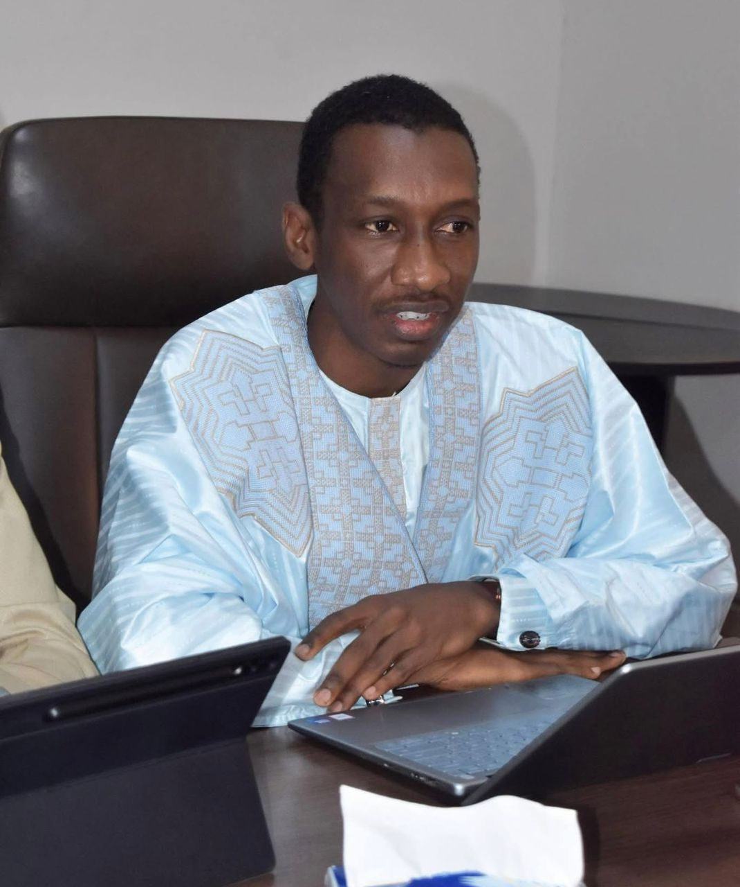

Direction générale
Le mot du Directeur Général

Moctar Ba
Directeur Général, GTS-S.A.
"Remettre le Sénégal sur les rails, c'est reconnecter nos territoires et accompagner durablement le développement économique du pays.»
Qui sommes-nous
Une entreprise d'État au service du rail
Les Grands Trains du Sénégal (GTS-S.A.), héritiers du PTB, œuvrent depuis 2020 à la relance du transport ferroviaire national.
Les Grands Trains du Sénégal (GTS-S.A.) sont l'héritiers du PTB, transformé en société anonyme le 18 mars 2020. Notre mission : exploiter le transport ferroviaire de voyageurs et de fret, ainsi que les opérations logistiques qui s'y rattachent.
Depuis 2020, notre programme de relance porte sur la mise à niveau du matériel roulant, le renforcement de la sécurité ferroviaire, la formation de nos équipes et la reconstruction progressive de la desserte interurbaine — en cohérence avec le Plan Sénégal Émergent et la Vision Sénégal 2050.
Efficacité, rigueur, fiabilité et recherche de l'excellence guident chacune de nos opérations, du départ des trains jusqu'à la livraison des marchandises.
Notre feuille de route
Le Programme de Relance du Transport Ferroviaire
Quatre chantiers structurent la modernisation du réseau national.
Matériel roulant
Mise à niveau et maintenance du parc de trains, dont les rames "Réversibles".
Sécurité ferroviaire
Cellule dédiée au système de management de la sécurité, en partenariat avec la Brigade Nationale des Sapeurs-Pompiers.
Infrastructures
Construction d'abris voyageurs et étude d'une plateforme logistique à Touba.
Capital humain
Renforcement des capacités du personnel et recrutement de nouvelles équipes.